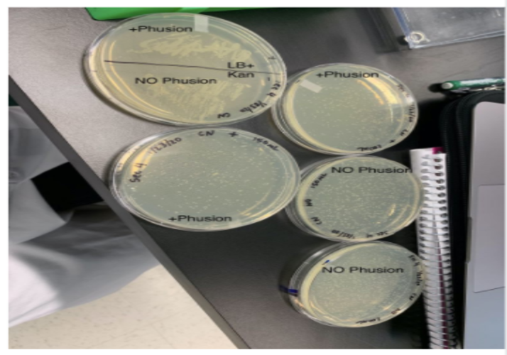
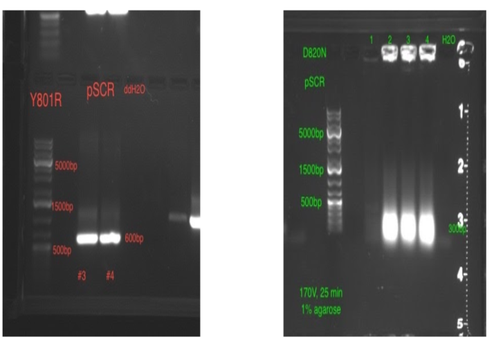
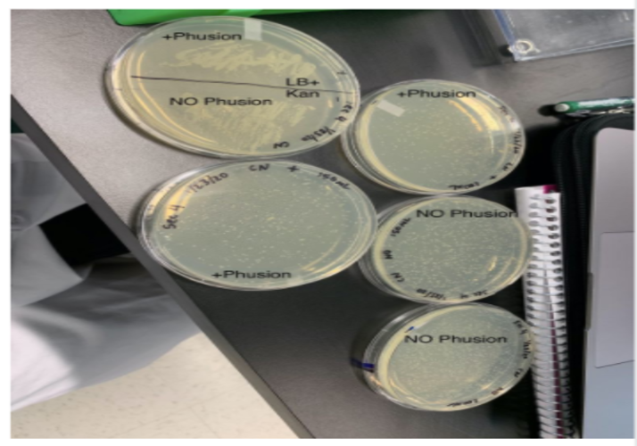
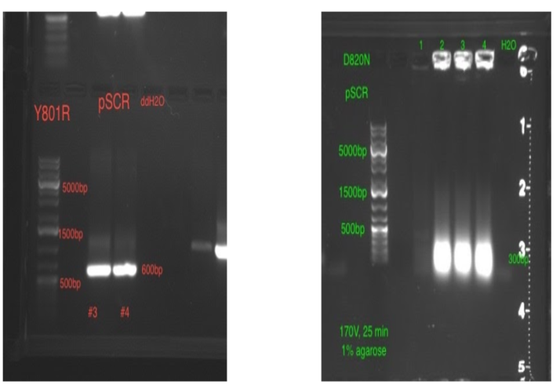

Charvita Nemarugommula
Hello! I am a cellular, molecular, and developmental biology major that is extremely passionate about entering the healthcare research field. Although it was difficult at first to figure out what job I am passionate about, I ended up becoming extremely passionate about the role of a researcher in a clinical trial.
Ever since high school, I really hoped to change the future of healthcare. Originally, I believed that I was going the pre-med route, but after taking a class at UCR, I realized that research was my true passion. Research had truly intrigued me when I first took this class that mimicked that of a real research lab. This class was Dynamic Genome. In this class, we were able to learn almost all the aspects of being part of a research lab.
Dynamic Genome really brought out the most captivating parts of a research lab. It was so interesting how you were able to experiment and tinker with the equipment to produce a product that would give the optimum results. Further on, I was able to experience how to write a research paper and give presentations on certain issues. During this project, I had done an experiment regarding plants. Although plants are incredibly interesting, I hope to expand more into human clinical research. Plant research had allowed me to understand the beginning of research and how we could alter experiments for the most accurate approach. One of my favorite parts of research would probably be the presentations once we had finished the experiments. This allows for the spreading of knowledge to those who are interested in the same things as you are. Once I understand a certain topic, I am able to go on and on about that topic. Research is an incredibly amazing profession that I want to be a part of in the future. I hope to provide knowledge to the world that can and will change the lives of many.
Experience
Student Researcher - Dynamic Genome
• Performed PCR, Gel Electrophoresis, Electroporation, BLAST sequencing, and other important techniques for gene separation of the IRK gene in the Arabidopsis plant.
• Wrote an extensive, graded research paper.
• Presented research in front of academics.
Tutor
• Taught children how to read, write, and speak in English.
• Created lesson plans.
Receptionist
• Organized the front desk.
• Spoke with parents and teachers regarding concerns.
• Created promotional material for the school.
Education
UC Riverside
Portfolio



 